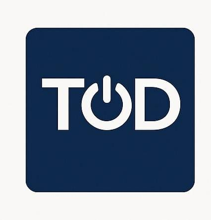
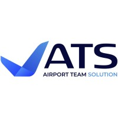
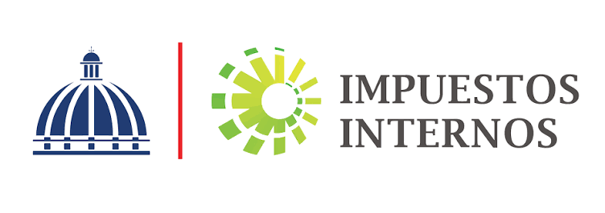

Security Mindset
Protecting information through governance, risk management, and practical security controls.
WELCOME TO MY PROFESSIONAL PORTFOLIO
Information Security and GRC professional with 15+ years of professional experience, including cybersecurity, ISO/IEC 27001 implementation and auditing, AI governance, risk management, compliance, and process improvement.
I help organizations translate complex security and compliance requirements into practical processes, clear documentation, and actionable business outcomes.
GET TO KNOW ME
Combining professional experience, technology, and continuous growth.
I am a cybersecurity and information security professional originally from the Dominican Republic and now based in Utah.
My professional background combines cybersecurity, governance, risk management, compliance, process improvement, documentation, and training.
I am also a Tech Mom, continuously learning and expanding my technology skills through the Tech Moms community.
Protecting information through governance, risk management, and practical security controls.
Connecting people, processes, and technology to build stronger security cultures.
Expanding my knowledge in web development, cybersecurity, and artificial intelligence.
MY PROFESSIONAL BACKGROUND
A journey across information security, quality, documentation, and technology.



MY WORK
Professional initiatives and areas where I have applied my experience and knowledge.
Supported Airport Team Solutions through the implementation of an Information Security Management System, including documentation, risk processes, employee training, and certification audit preparation.
Developed and maintained information security documentation, policies, procedures, and supporting evidence to strengthen governance and compliance activities within a large public-sector organization.
Supported internal audit activities through control reviews, evidence collection, documentation analysis, and follow-up of security and compliance requirements.
Designed evaluation rubrics for LLM outputs, identified edge cases and policy violations, and applied analytical judgment to support AI model alignment and risk mitigation.
WHAT I BRING
A combination of governance, security, risk management, and emerging technology.
EDUCATION, CERTIFICATIONS & GROWTH
A continuous journey of academic preparation, professional certifications, and technology learning.
CEUPE – Spain
CompletedPostgraduate Specialization
Bachelor's Degree
Information Security Management System implementation and management.
Information Security Management System auditing and compliance assessment.
Information security risk management principles and practices.
Lean principles and continuous improvement applied to IT services.
Learning to structure web pages using semantic HTML elements.
FOUNDATIONLearning to design websites, organize layouts, and create responsive interfaces.
DESIGNMy next step is learning JavaScript to add interaction and dynamic functionality.
NEXT STEPLET'S BUILD CONNECTIONS
I would love to connect with professionals and organizations working in cybersecurity, technology, AI, and innovation.
Get in Touch